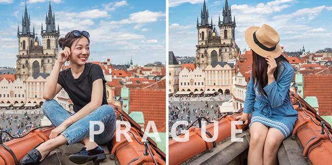
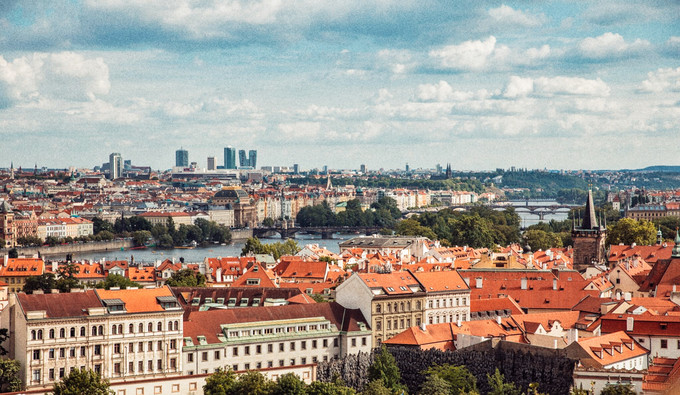
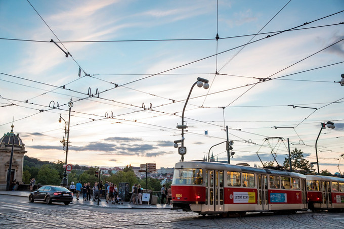
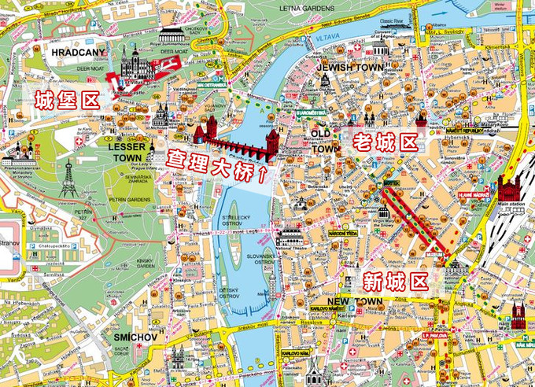
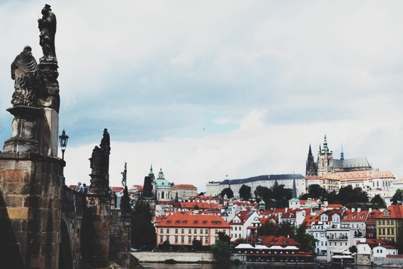

#布拉格# Nonstop闪游趴趴走！附超赞拍照取景位和美食揭秘
大家猴！我是良个月(ﾉ´▽｀)ﾉ♪
一个专注分享实用内容的烂文笔girl
欢迎收看这篇布拉格游记！
这次的布拉格之行是一个临时决定的小意外
忙乎了一个月，突然脑洞大开想去一个没去过的城市转一圈。
立马向小伙伴发出了一个不成熟的小建议——下周我们面基改成在布拉格一起玩耍怎么样！没想到她超级配合地迅速答应了！刺激！马上订好机票和酒店！说走就走好棒棒！
我们眼中的布拉格
→ 老城广场附近的天台Bar

→ 从布拉格城堡区俯瞰整个城

→ 在伏尔塔瓦河河畔捕夕阳 ❤

布拉格景点一览 / 行程推荐

以贯穿整个布拉格伏尔塔瓦河为中心，我们可以将布拉格分为左右两个部分。
——左边是城堡区，右边是老城区和新城区。
其中以城堡区为主的左侧，主要景点有：
1.圣维特大教堂 （Katedrala svateho Vita）
2.旧皇宫（Stary kralovsky palac）
3.圣乔治大殿（Bazilika sv.Jiri）
4.黄金巷（Zlata ulicka）
5.列侬墙（Lennonova ze）
6.卡夫卡博物馆（Franz Kafka Museum）
7.坎帕公园（Kampa）
以老城区和新城区为主的右侧，主要景点有：
1.老城广场（Staroměstské podzemí，就是那个没有许愿池的布拉格广场）
2.天文钟（Pražský orloj）
3.火药塔（Prašná brána）
4.跳舞的房子（Tančící dům）
5.布拉格市立图书馆/捷克国家图书馆（Knihovna，这两个就在隔壁）
6.瓦兹拉夫大道（Václavské nám）
7.布拉格国家博物馆（Národní muzeum）
8.犹太区墓园（Starý židovský hřbitov）
9.穆夏博物馆（Mucha muzeum）
